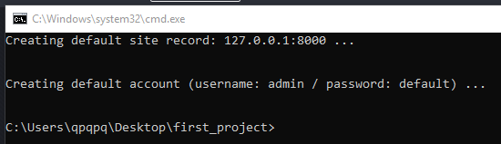
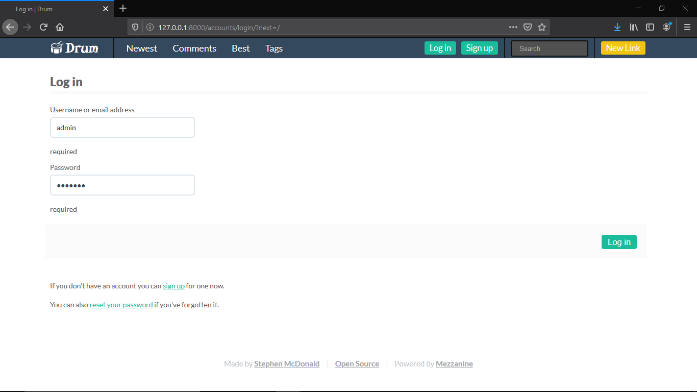
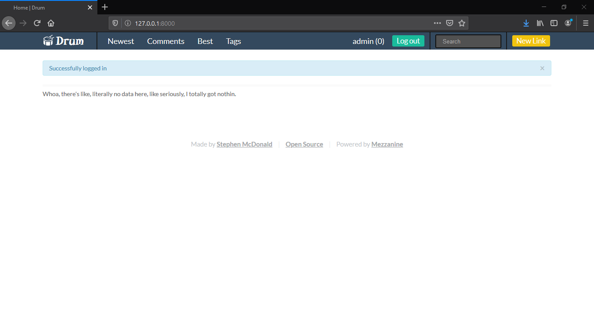
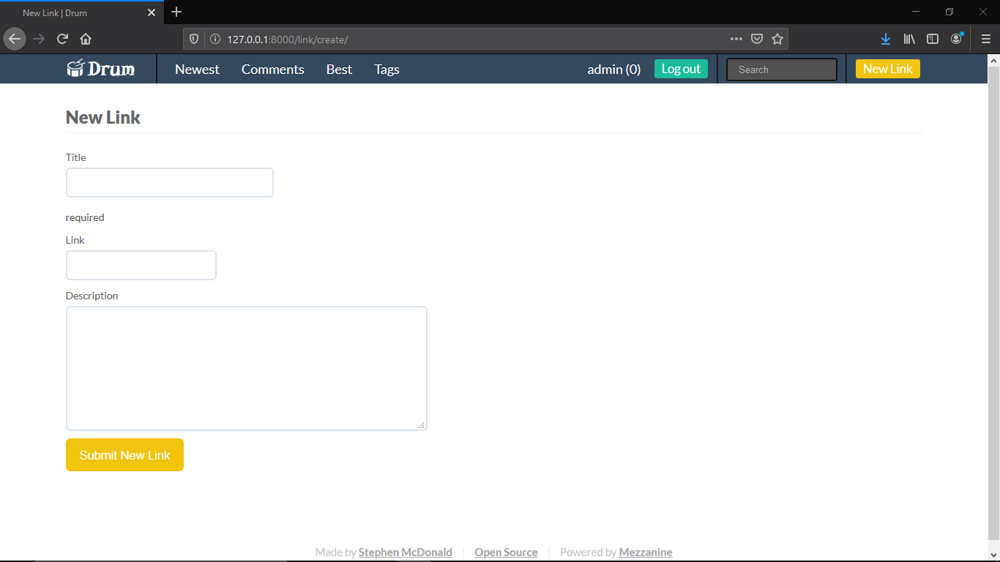
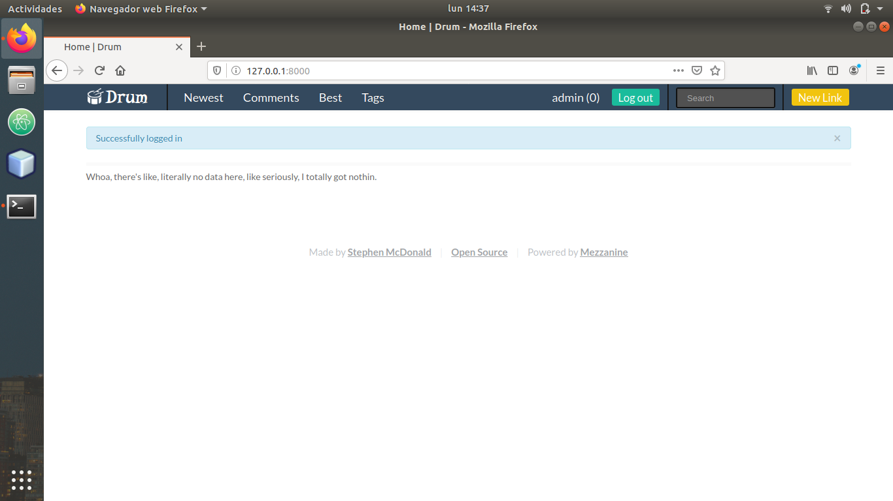

Instrucciones
- Instalar Django con Python y desarrollar una aplicación básica en Linux y Windows.
Requerimientos
- Conexión a internet.
- Python.
Comencemos
- Lo primero que debemos hacer es instalar Python en ambos sistemas operativos. Esto ya fue hecho y explicado paso a paso en la práctica número 2, incluyendo el paso de añadir Python a PATH durante la instalación (¿recuerdas que dije que sería útil a futuro?). Si no realizaste la instalación, procede primero con ello, y si no seleccionaste el recuadro de añadir a PATH durante la instalación, no te preocupes. Es posible arreglarlo, sólo que se tiene que hacer a mano mediante otro procedimiento.
- Una vez realizado esto, procederemos a instalar Djando en Linux. En nuestro caso (Ubuntu), lo único que necesitamos hacer es abrir la línea de comandos y escribir lo siguiente:
- Lo que haremos será escribir un comando bastante similar al anterior:
- Instalamos Drum. Drum es un sitio de noticias inspirado en Reddit, codificado en Python junto con Mezzanine y el framework Django.
- Procedemos a configurar el proyecto, dirigiéndonos a la carpeta en donde queremos ponerlo (en mi caso en el escritorio) y al final escribiendo el nombre que queremos darle.
- Ahora creamos la base de datos y migramos los cambios generados. También creamos un usuario y contraseña, que por defecto serán
admin
para el usuario, ydefault
para la contraseña. - Por último, corremos el servidor.

En el caso de que nos arroje un error en donde nos diga que no se ha encontrado la orden pip
, instalaremos dicha utilidad mediante
el comando:
Terminado el proceso, ahora continuaremos a instalar Django en Windows.
A excepción de la mayoría de las ocasiones con Windows, esta ves sí podremos hacer la instalación desde la línea de comandos
como en Linux, en lugar de tener que acceder a una página web, descargar un instalador y ejecutarlo.
Finalmente procederemos a descargar y configurar nuestro programa muestra realizado en Python con Django. Para esto, seguiremos las siguientes instrucciones desde la consola de cada uno de los sistemas operativos (son las mismas para ambos):


Como podemos observar, el sitio por defecto se generará en la dirección 127.0.0.1:8000
Y aquí podemos ver algunas de las pantallas de la aplicación ya funcionando.
Pantalla de inicio (no tiene nada porque no le cargamos datos).

Hacemos login como administrador.

Entramos con éxito.

Como administradores, podemos agregar los links con título y descripción de lo que vayamos queriendo que se muestre en la página.

Aquí podemos ver la página funcionando igualmente en Ubuntu, después de seguir todos los pasos anteriores de instalación y configuración.